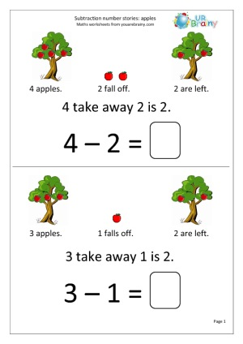

Project Intro
For our next project we are going to be using Frames to create more moving pictures. This time, we will be using the Frames Library to find our own pictures to use. We will use these pictures and the T-Tool to make Number Stories.
Teaching Point:
Today we will learn how to use the Library in Frames.
Getting Pictures from the Library.
All of the pictures we used in Frames came from the Frames Picture Library. There are many more pictures in the library that can help us make whatever kind of picture we want. The Frames Library is A LOT like the Stamps Tool in Kid Pix.
To use the Library to find Pictures in Frames, we:
- Click on Library on the left side.
- Click on CLIP ART.
- Find the folder that has the kind of stuff that we want a picture of.
- Drag the picture we want into our slide.
- We can click on the green arrow on the top to go back and look at other folders.
Today's Assignment
Practice using the Frames Library to find Clip Art Pictures. Drag as many different pictures as you like onto your Frames.
Back to School Portal